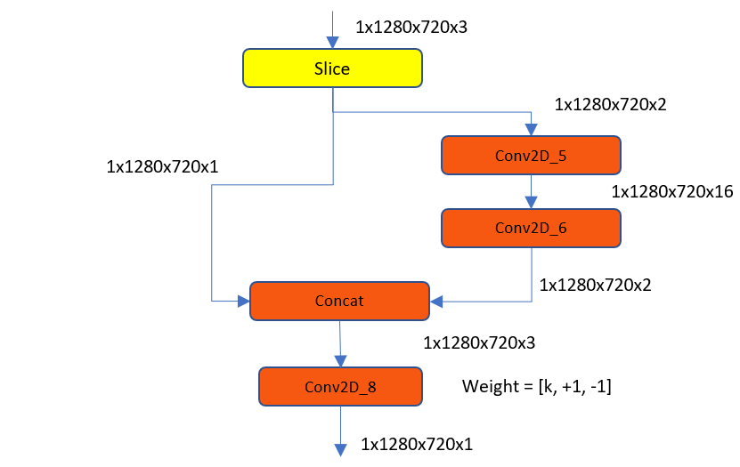

Avoid low depth Activations¶
Hardware Characteristics of Hexagon Tensor Processor¶
The matrix processing engine of Hexagon is designed to be very efficient at dense dot products down many channels and producing many channels of output simultaneously. Activation data is typically stored with a fixed granularity of channels. In other words the channels are typically rounded to the next multiple of 32. When the number of channels is much smaller than 32 (like 4, 8, 16 channels) we currently have low efficiency and performance can be sub-optimal. Additionally, if the number of channels is not a multiple of 32 it can cause inefficient memory usage due to the amount of padding that needs to be added for the fixed sizes. Consider network design approaches and/ or architechtures that maximize the usage of channels.
Network design techniques and examples¶
1. Use convolutions/matrix multiplications instead of separated out discrete kernels wherever possible to take advantage of the special purpose hardware.
Example: Figure 1 below shows a sequence in a network
Figure 1
The sequence starts with an input of shape 1x1280x720x3.
After this we slice out each of the three channels and work on it.
This is very inefficient for HTP as the number of channels is too small (1 in this case).
After the slice, lot of what done is elementwise multiply by a scalar and adding it to other values. This is just convolution! If we fuse this sequence of operations into convolutions as much as possible, as shown in Fig. 2, our performance on the end of the graph would be much better.
Figure 2
Further still, we should combine the 3 convolutions on each of the 3 channels into a single convolution kernal with input 1x1280x720x3 and output 1x1280x720x3 as shown in Figure 3 below.
Figure 3
2. Do transformations to the graph in such a way that the transformed graph is functionally equivalent, but where feasible, kernels are coalesced to increase the number of channels (optimal number of channels to have is 32). This will improve efficiency and performance.
Example: Consider the Figure 4
Figure 4
After the ‘Slice’ op, there are series of channel convolutions, the first one 1 -> 9 -> 1 (Conv2D_1 and Conv2D_3), and the second one 1 -> 7 -> 1 (Conv2D_2 and Conv2D_4). The outputs of the 2 series are then subtracted. The output of subtract op is then added to the scaled version of the first channel coming from ‘Slice’.
Instead, we can equivalently formulate this as a single series of convolutions as 1 -> 16 -> 2, followed by a convolution with [+1, -1] weights, as shown in Figure 5.
Figure 5
The result of that is then added to scaled version of other channel, which again is just beefing up the conv so instead of just [ +1, -1] weights you could combine with other channel as shown. The weight vector in this case would be [k, +1, -1], where k is the scalar value with which to multiply, as shown in Figure 6 below.
Figure 6
3. Some of these transformations may not be intuitive since they theoretically increase the amount of work required and consequently MACs, however we typically expect performance and power to be improved in these cases due to better alignment with hardware.
4. Some of these transformations might not be lossless and might reduce accuracy but it’s worthwhile to consider network designs of this nature ahead of time at training time.
Example: Consider the Figure 7 below
Figure 7
We have three separate convolutions of size [418,418,6] -> [3x3] -> [416,416,2]. The 3 outputs of size [416,416,2] are then concatenated in depth to get an output of size [416,416,6].
For better performance, instead, it is best to concat 3 inputs of size [418,418,6] to a single [418,418,18]. Then a single convolution of [3x3] produces the [416,416,6] output, as shown in Figure 8.
Figure 8